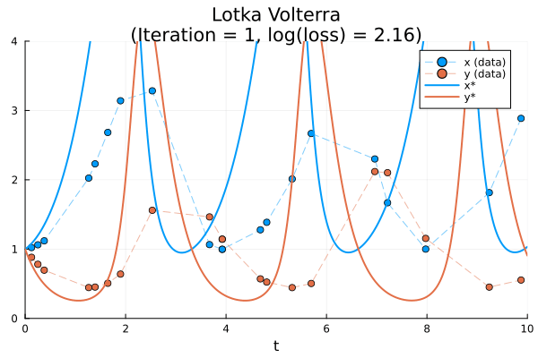
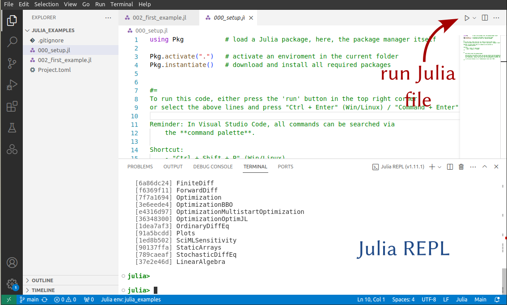
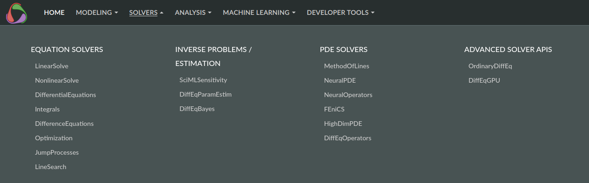
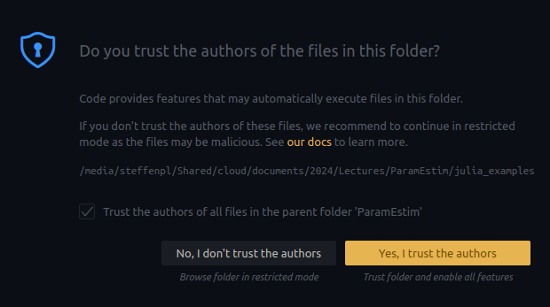

This lecture is part of the lecture series organized by the Research Center of Mathematics for Social Creativity, Research Institute for Electronic Science, Hokkaido University.
Statistics and optimisation theory provide rich theories to find optimal model parameters for given datapoints. These methodologies adapt well to ODE and PDE models. Depending on the number of unknown parameters and available data, different strategies are optimal. We will discuss optimisation based parameter estimation and automatic differentiation, a technique to obtain accurate gradients.

Figure: Example parameter fitting using an
Lecture notes and example code (links in preparation).
This lecture will be interactive with various coding sessions. Please install Julia in advace! 👍
Please install:
We will follow the official installation instructions from julialang.org/downloads.
For Windows, open a terminal and type
winget install julia -s msstore
For Linux/MacOS, open a terminal and type
curl -fsSL https://install.julialang.org | sh
To test the installation, you can
type julia into the terminal, which should start the most recent version of Julia!
Visual Studio Code is a modern text editor[3] which can function as an IDE for many programming languages. It is the current de-facto standard for programming in Julia.
We will follow the instructions from code.visualstudio.com/docs/languages/julia.
For basic operations inside VS Code, please check code.visualstudio.com/docs/getstarted/getting-started.
The most useful command in Visual Studio Code is the command palette, where you can search for any commands!
Shift + Command + P (Mac) or Ctrl + Shift + P Windows/Linux.
Preferences: Color Theme to select a nice theme!File > Open Folder.[4]000_setup.jl and press the run button in the top right corner of the editor (or run the command Julia: Execute Active File in REPL[2:1]). This should download and install all requirements.002_first_example.jl and also run this file. It should display a plot of an ODE solution.[5]
You can also run Julia code by selecting a few lines in the editor and using the shortcut Shift+Enter.
One of the best features of Julia is the large ecosystem of very modern scientific computing packages. One can see a great overview at the documentation side of the SciML project (Scientific Machine Learning).

To add a new package to your current code, you can use the integrated Julia package manager as follows:
] key to enter the package mode.activate . (where . denotes the current folder).add to install a new package, for example viaadd OrdinaryDiffEq Plots
to install the two packages OrdinaryDiffEq and Plots.
Once you added a package, you and use it's functions with the Julia command
using OrdinaryDiffEq, Plots
inside your Julia code.
The dependencies might change shortly before the lecture. If any problems arise, please contact me. ↩︎
To find any command in Visual Studio code, open the command palette via the shortcut Shift + Command + P (Mac) or Ctrl + Shift + P Windows/Linux. ↩︎ ↩︎
If you prefer strict free open-source software, one might prefer VSCodium. ↩︎
The first time you open a new folder, Visual Studio Code might ask you to confirm that you trust the files. This is normal behaviour and in order to work on a program you need to agree to trust the folder:

↩︎The first runtime might be slow, due to one-time precompilation. ↩︎